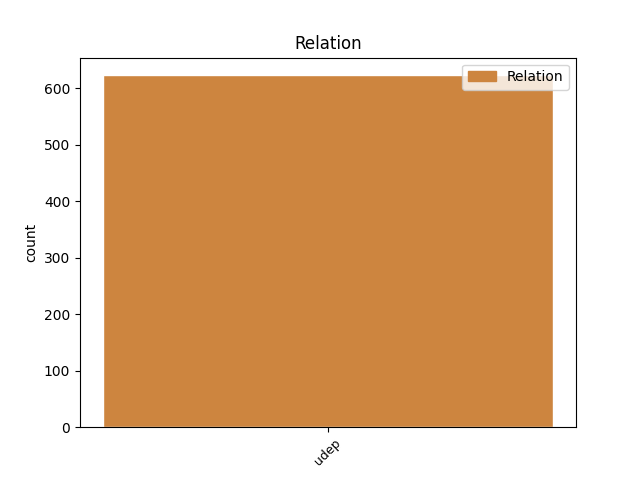
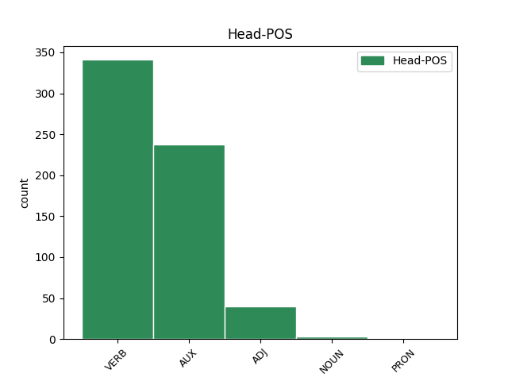
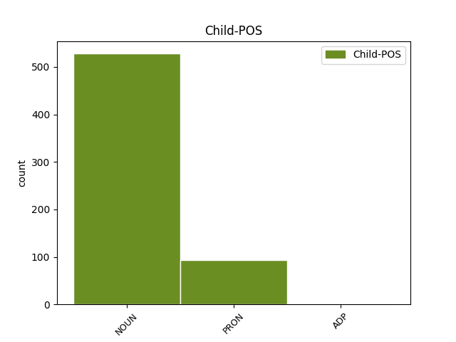

Distribution of features within this leaf



Agreement Rules sorted by frequency.
- When the dependent token is the underspecified dependency(udep) of the head token, and the dependent token is NOUN.
1 Quest’ _ _ _ _ 0 _ _ _
2 anno anno NOUN S Gender=Masc|Number=Sing 11 udep _ _
3 il _ _ _ _ 0 _ _ _
4 regolamento _ _ _ _ 0 _ _ _
5 di _ _ _ _ 0 _ _ _
6 le _ _ _ _ 0 _ _ _
7 gare _ _ _ _ 0 _ _ _
8 di _ _ _ _ 0 _ _ _
9 Formula _ _ _ _ 0 _ _ _
10 Uno _ _ _ _ 0 _ _ _
11 è essere AUX VA Mood=Ind|Number=Sing|Person=3|Tense=Pres|VerbForm=Fin 0 _ _ _
12 cambiato _ _ _ _ 0 _ _ _
13 . _ _ _ _ 0 _ _ _
1 Le _ _ _ _ 0 _ _ _
2 canzoni _ _ _ _ 0 _ _ _
3 di _ _ _ _ 0 _ _ _
4 il _ _ _ _ 0 _ _ _
5 nuovo _ _ _ _ 0 _ _ _
6 disco _ _ _ _ 0 _ _ _
7 di _ _ _ _ 0 _ _ _
8 Mina _ _ _ _ 0 _ _ _
9 , _ _ _ _ 0 _ _ _
10 Bula _ _ _ _ 0 _ _ _
11 Bula _ _ _ _ 0 _ _ _
12 sono _ _ _ _ 0 _ _ _
13 tutte tutto PRON PI Gender=Fem|Number=Plur|PronType=Ind 14 udep _ _
14 nuove nuovo ADJ A Gender=Fem|Number=Plur 0 _ _ _
15 . _ _ _ _ 0 _ _ _
1 La _ _ _ _ 0 _ _ _
2 storia _ _ _ _ 0 _ _ _
3 di _ _ _ _ 0 _ _ _
4 Balzac _ _ _ _ 0 _ _ _
5 Une _ _ _ _ 0 _ _ _
6 Heure _ _ _ _ 0 _ _ _
7 de _ _ _ _ 0 _ _ _
8 Ma _ _ _ _ 0 _ _ _
9 Vie _ _ _ _ 0 _ _ _
10 ( _ _ _ _ 0 _ _ _
11 Un' _ _ _ _ 0 _ _ _
12 ora _ _ _ _ 0 _ _ _
13 di _ _ _ _ 0 _ _ _
14 la _ _ _ _ 0 _ _ _
15 mia _ _ _ _ 0 _ _ _
16 vita _ _ _ _ 0 _ _ _
17 , _ _ _ _ 0 _ _ _
18 1822 _ _ _ _ 0 _ _ _
19 ) _ _ _ _ 0 _ _ _
20 , _ _ _ _ 0 _ _ _
21 in _ _ _ _ 0 _ _ _
22 cui _ _ _ _ 0 _ _ _
23 i _ _ _ _ 0 _ _ _
24 dettagli _ _ _ _ 0 _ _ _
25 minuziosi _ _ _ _ 0 _ _ _
26 sono _ _ _ _ 0 _ _ _
27 seguiti _ _ _ _ 0 _ _ _
28 da _ _ _ _ 0 _ _ _
29 profonde _ _ _ _ 0 _ _ _
30 riflessioni _ _ _ _ 0 _ _ _
31 personali _ _ _ _ 0 _ _ _
32 è _ _ _ _ 0 _ _ _
33 un _ _ _ _ 0 _ _ _
34 chiaro _ _ _ _ 0 _ _ _
35 antecedente _ _ _ _ 0 _ _ _
36 di _ _ _ _ 0 _ _ _
37 lo _ _ _ _ 0 _ _ _
38 stile _ _ _ _ 0 _ _ _
39 che _ _ _ _ 0 _ _ _
40 Proust _ _ _ _ 0 _ _ _
41 ha _ _ _ _ 0 _ _ _
42 usato _ _ _ _ 0 _ _ _
43 in _ _ _ _ 0 _ _ _
44 À _ _ _ _ 0 _ _ _
45 la _ _ _ _ 0 _ _ _
46 recherche recherche NOUN S Gender=Fem|Number=Sing 0 _ _ _
47 du du ADP E Gender=Masc|Number=Sing 46 udep _ _
48 temps _ _ _ _ 0 _ _ _
49 perdu _ _ _ _ 0 _ _ _
50 . _ _ _ _ 0 _ _ _
Disagree Examples:
1 A _ _ _ _ 0 _ _ _
2 il _ _ _ _ 0 _ _ _
3 confine _ _ _ _ 0 _ _ _
4 con _ _ _ _ 0 _ _ _
5 la _ _ _ _ 0 _ _ _
6 Bosnia _ _ _ _ 0 _ _ _
7 settentrionale _ _ _ _ 0 _ _ _
8 si _ _ _ _ 0 _ _ _
9 è _ _ _ _ 0 _ _ _
10 formata _ _ _ _ 0 _ _ _
11 una _ _ _ _ 0 _ _ _
12 colonna _ _ _ _ 0 _ _ _
13 lunga lungo ADJ A Gender=Fem|Number=Sing 0 _ _ _
14 10 _ _ _ _ 0 _ _ _
15 chilometri chilometro NOUN S Gender=Masc|Number=Plur 13 udep _ _
16 di _ _ _ _ 0 _ _ _
17 profughi _ _ _ _ 0 _ _ _
18 in _ _ _ _ 0 _ _ _
19 marcia _ _ _ _ 0 _ _ _
20 , _ _ _ _ 0 _ _ _
21 in _ _ _ _ 0 _ _ _
22 auto _ _ _ _ 0 _ _ _
23 e _ _ _ _ 0 _ _ _
24 a _ _ _ _ 0 _ _ _
25 piedi _ _ _ _ 0 _ _ _
26 . _ _ _ _ 0 _ _ _
1 La _ _ _ _ 0 _ _ _
2 Libia _ _ _ _ 0 _ _ _
3 è _ _ _ _ 0 _ _ _
4 stata _ _ _ _ 0 _ _ _
5 più _ _ _ _ 0 _ _ _
6 volte volta NOUN S Gender=Fem|Number=Plur 7 udep _ _
7 accusata accusare VERB V Gender=Fem|Number=Sing|Tense=Past|VerbForm=Part 0 _ _ _
8 di _ _ _ _ 0 _ _ _
9 fornire _ _ _ _ 0 _ _ _
10 basi _ _ _ _ 0 _ _ _
11 a _ _ _ _ 0 _ _ _
12 le _ _ _ _ 0 _ _ _
13 squadre _ _ _ _ 0 _ _ _
14 di _ _ _ _ 0 _ _ _
15 Abu _ _ _ _ 0 _ _ _
16 Nidal _ _ _ _ 0 _ _ _
17 , _ _ _ _ 0 _ _ _
18 ma _ _ _ _ 0 _ _ _
19 in _ _ _ _ 0 _ _ _
20 quell' _ _ _ _ 0 _ _ _
21 occasione _ _ _ _ 0 _ _ _
22 Tripoli _ _ _ _ 0 _ _ _
23 fu _ _ _ _ 0 _ _ _
24 la _ _ _ _ 0 _ _ _
25 prima _ _ _ _ 0 _ _ _
26 a _ _ _ _ 0 _ _ _
27 denunciare _ _ _ _ 0 _ _ _
28 il _ _ _ _ 0 _ _ _
29 sequestro _ _ _ _ 0 _ _ _
30 . _ _ _ _ 0 _ _ _
1 È _ _ _ _ 0 _ _ _
2 improbabile _ _ _ _ 0 _ _ _
3 che _ _ _ _ 0 _ _ _
4 gli _ _ _ _ 0 _ _ _
5 abitanti _ _ _ _ 0 _ _ _
6 di _ _ _ _ 0 _ _ _
7 Knin _ _ _ _ 0 _ _ _
8 , _ _ _ _ 0 _ _ _
9 su _ _ _ _ 0 _ _ _
10 i _ _ _ _ 0 _ _ _
11 quali _ _ _ _ 0 _ _ _
12 prima _ _ _ _ 0 _ _ _
13 di _ _ _ _ 0 _ _ _
14 la _ _ _ _ 0 _ _ _
15 resa _ _ _ _ 0 _ _ _
16 pioveva piovere VERB V Mood=Ind|Number=Sing|Person=3|Tense=Imp|VerbForm=Fin 0 _ _ _
17 un _ _ _ _ 0 _ _ _
18 proiettile _ _ _ _ 0 _ _ _
19 d' _ _ _ _ 0 _ _ _
20 artiglieria _ _ _ _ 0 _ _ _
21 ogni _ _ _ _ 0 _ _ _
22 dieci _ _ _ _ 0 _ _ _
23 secondi secondo NOUN S Gender=Masc|Number=Plur 16 udep _ SpaceAfter=No
24 , _ _ _ _ 0 _ _ _
25 abbiano _ _ _ _ 0 _ _ _
26 ricordato _ _ _ _ 0 _ _ _
27 l' _ _ _ _ 0 _ _ _
28 anniversario _ _ _ _ 0 _ _ _
29 di _ _ _ _ 0 _ _ _
30 l' _ _ _ _ 0 _ _ _
31 atomica _ _ _ _ 0 _ _ _
32 di _ _ _ _ 0 _ _ _
33 Hiroshima _ _ _ _ 0 _ _ _
34 . _ _ _ _ 0 _ _ _
1 E _ _ _ _ 0 _ _ _
2 nemmeno _ _ _ _ 0 _ _ _
3 soltanto _ _ _ _ 0 _ _ _
4 perché _ _ _ _ 0 _ _ _
5 da _ _ _ _ 0 _ _ _
6 le _ _ _ _ 0 _ _ _
7 ultime _ _ _ _ 0 _ _ _
8 tragedie _ _ _ _ 0 _ _ _
9 in _ _ _ _ 0 _ _ _
10 Krajina _ _ _ _ 0 _ _ _
11 potrebbero _ _ _ _ 0 _ _ _
12 nascere _ _ _ _ 0 _ _ _
13 condizioni _ _ _ _ 0 _ _ _
14 di _ _ _ _ 0 _ _ _
15 pace _ _ _ _ 0 _ _ _
16 , _ _ _ _ 0 _ _ _
17 come _ _ _ _ 0 _ _ _
18 cinquant' _ _ _ _ 0 _ _ _
19 anni anno NOUN S Gender=Masc|Number=Plur 28 udep _ _
20 fa _ _ _ _ 0 _ _ _
21 la _ _ _ _ 0 _ _ _
22 cancellazione _ _ _ _ 0 _ _ _
23 di _ _ _ _ 0 _ _ _
24 le _ _ _ _ 0 _ _ _
25 due _ _ _ _ 0 _ _ _
26 città _ _ _ _ 0 _ _ _
27 nipponiche _ _ _ _ 0 _ _ _
28 pose porre VERB V Mood=Ind|Number=Sing|Person=3|Tense=Past|VerbForm=Fin 0 _ _ _
29 fine _ _ _ _ 0 _ _ _
30 a _ _ _ _ 0 _ _ _
31 la _ _ _ _ 0 _ _ _
32 guerra _ _ _ _ 0 _ _ _
33 in _ _ _ _ 0 _ _ _
34 Oriente _ _ _ _ 0 _ _ _
35 . _ _ _ _ 0 _ _ _
1 D' _ _ _ _ 0 _ _ _
2 altro _ _ _ _ 0 _ _ _
3 canto _ _ _ _ 0 _ _ _
4 , _ _ _ _ 0 _ _ _
5 se _ _ _ _ 0 _ _ _
6 è _ _ _ _ 0 _ _ _
7 vero _ _ _ _ 0 _ _ _
8 , _ _ _ _ 0 _ _ _
9 come _ _ _ _ 0 _ _ _
10 ha _ _ _ _ 0 _ _ _
11 detto _ _ _ _ 0 _ _ _
12 a _ _ _ _ 0 _ _ _
13 l' _ _ _ _ 0 _ _ _
14 Ansa _ _ _ _ 0 _ _ _
15 il _ _ _ _ 0 _ _ _
16 segretario _ _ _ _ 0 _ _ _
17 di _ _ _ _ 0 _ _ _
18 il _ _ _ _ 0 _ _ _
19 vescovo _ _ _ _ 0 _ _ _
20 di _ _ _ _ 0 _ _ _
21 Goma _ _ _ _ 0 _ _ _
22 , _ _ _ _ 0 _ _ _
23 Faustino _ _ _ _ 0 _ _ _
24 Angabu _ _ _ _ 0 _ _ _
25 , _ _ _ _ 0 _ _ _
26 che _ _ _ _ 0 _ _ _
27 la _ _ _ _ 0 _ _ _
28 strada _ _ _ _ 0 _ _ _
29 percorsa _ _ _ _ 0 _ _ _
30 da _ _ _ _ 0 _ _ _
31 il _ _ _ _ 0 _ _ _
32 gruppo _ _ _ _ 0 _ _ _
33 di _ _ _ _ 0 _ _ _
34 italiani _ _ _ _ 0 _ _ _
35 massacrati massacrare VERB V Gender=Masc|Number=Plur|Tense=Past|VerbForm=Part 0 _ _ _
36 sabato sabato NOUN S Gender=Masc|Number=Sing 35 udep _ _
37 era _ _ _ _ 0 _ _ _
38 considerata _ _ _ _ 0 _ _ _
39 sicura _ _ _ _ 0 _ _ _
40 , _ _ _ _ 0 _ _ _
41 è _ _ _ _ 0 _ _ _
42 pur _ _ _ _ 0 _ _ _
43 vero _ _ _ _ 0 _ _ _
44 che _ _ _ _ 0 _ _ _
45 lo _ _ _ _ 0 _ _ _
46 Zaire _ _ _ _ 0 _ _ _
47 è _ _ _ _ 0 _ _ _
48 uno _ _ _ _ 0 _ _ _
49 di _ _ _ _ 0 _ _ _
50 i _ _ _ _ 0 _ _ _
51 Paesi _ _ _ _ 0 _ _ _
52 più _ _ _ _ 0 _ _ _
53 pericolosi _ _ _ _ 0 _ _ _
54 di _ _ _ _ 0 _ _ _
55 tutta _ _ _ _ 0 _ _ _
56 l' _ _ _ _ 0 _ _ _
57 Africa _ _ _ _ 0 _ _ _
58 . _ _ _ _ 0 _ _ _